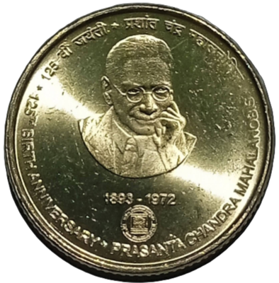
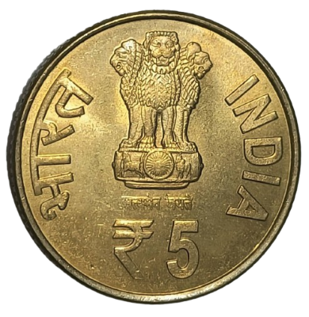

The 2018 Commemorative Issue
The Government of India issued commemorative coins in 2018 to mark the 125th birth anniversary of Professor Prasanta Chandra Mahalanobis (1893–1972), the eminent statistician who founded the Indian Statistical Institute (ISI) in Kolkata in 1931. His contributions to large-scale sample surveys and statistical planning were foundational to independent India’s economic planning framework.
Two denominations were struck for the occasion: a ₹125 coin in a quaternary silver alloy released as a non-circulating Proof collector’s piece, and a ₹5 coin in nickel brass intended for general circulation. The ₹5 coin, while technically a circulating issue, was rarely encountered in everyday transactions owing to its commemorative nature and limited production.
Coin Specifications
Both portrait varieties of the ₹5 coin share identical declared specifications. The obverse of each piece carries the Ashoka Lion Capital emblem above the denomination ₹5, flanked by “भारत” and “INDIA”, with the national motto “सत्यमेव जयते” below.
The ₹125 denomination was chosen to align with the 125th birth anniversary year. Its quaternary silver alloy composition and 44 mm diameter give it a substantial presence compared to the circulating ₹5 piece, which uses the standard nickel brass alloy common to modern Indian five-rupee coins.
The Two Variants
Despite sharing the same denomination, metal composition, size, and inscriptions, the ₹5 Mahalanobis coin is known to exist in two visually distinct varieties, differentiated by the size and prominence of the portrait on the reverse.


FY 2018–19 · Kolkata Mint RTI
FY 2019–20 · Kolkata Mint RTI
Identifying the Difference
The obverse of both varieties is identical and provides no distinguishing information. Identification must be made from the reverse. The key marker is the relative size of Professor Mahalanobis’s portrait in relation to the coin’s total surface area.
In the large portrait variety, the face and upper body of the subject occupy more of the available field, with the chin and shoulders positioned closer to the coin’s edges. The relief is noticeably higher, giving the portrait a three-dimensional appearance under raking light. In contrast, the small portrait variety has a measurably more compact image, with greater open field around the subject. The facial features, while well-defined, are rendered at a smaller scale and display softer high-points.
A side-by-side comparison is the most reliable method of identification. The distinction becomes immediately apparent once a collector is familiar with both types; experienced numismatists can identify the variety without a reference piece after handling several examples.
Mintage & Production
Precise official mintage data for the two varieties has not been formally published by the Government of India. However, information obtained through Right to Information (RTI) requests directed to the Kolkata Mint has provided indicative production figures by financial year:
| Financial Year | Estimated Mintage | Presumed Variety |
|---|---|---|
| 2018–19 | ~20,000 pieces | Large Portrait (Variety A) |
| 2019–20 | ~10,115,000 pieces | Small Portrait (Variety B) |
These figures are derived from RTI responses and should be treated as indicative estimates rather than confirmed mintage numbers. The significant disparity between the two years — approximately 500-fold — is consistent with field observations: large portrait pieces are considerably scarcer in uncirculated condition, while small portrait examples are routinely available at numismatic exhibitions and dealer stocks.
Availability in Collector Sets
The Kolkata Mint and the Hyderabad Mint both issued the ₹5 Mahalanobis coin in Proof and Uncirculated (UNC) sets. Based on available documentation and collector records, the large portrait (Variety A) is the variety included in these sets from both mints. The small portrait (Variety B) was minted in far larger quantities for general circulation and was not packaged in official presentation sets.
This distinction is significant for set collectors: a ₹5 coin extracted from an official Proof or UNC set can be confidently attributed as the large portrait variety, whereas loose circulation examples encountered at auctions or dealers are most likely the small portrait variant unless individually verified.
Collector Notes
The large portrait variety (Variety A) is the more desirable of the two from a rarity standpoint. Its estimated production of around 20,000 pieces, combined with the fact that a portion of those were absorbed into Proof and UNC sets, means that high-grade circulated or raw uncirculated examples are increasingly difficult to source. Demand from variety collectors has grown noticeably in recent years.
The small portrait variety (Variety B), while far more common, remains an important piece in a complete set of modern Indian commemoratives. Its 2019–20 mintage of over 10 million pieces makes it one of the higher-mintage commemoratives of recent years, yet it is still a scarcer issue relative to definitive coinage.
Collectors building a comprehensive holding of this issue should aim to acquire both varieties in the highest grade accessible to them. The difference in market value between the two varieties in MS-grade condition is substantial and expected to widen as variety awareness increases among the broader collector community.
Related Entry in the Catalogue
Both varieties are catalogued separately in this portal under the Commemorative ₹5 Rupees catalogue . The large portrait entry is listed as “125th Birth Anniversary Prasanta Chandra Mahalanobis Big Portrait” and the small portrait as “125th Birth Anniversary Prasanta Chandra Mahalanobis Small Portrait.”